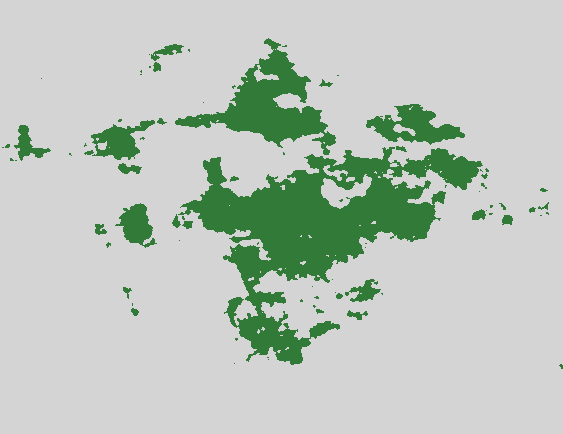

Bergia The Most Serene Republic of Bergia |
|---|
|
Flag of Bergia |
|
 Map of Bergia |
Bergia[1], officially the Most Serene Republic of Bergia, is an island country in the Central Region of Terraferma. Located between the continents of Padova and Ngumo, it is bordered by the Great Bergian Sea by all sides. The Bergian archipelago consists of the five major islands alongside over three thousand major islands. Bergia is divided into 100 administrative prefectures and ten "major regions," and around 80% of its terain are plateaus or are heavily forested, causing most of its population to live in the coastal plains. With a population of almost 192 million sapient beings, it is the 5th most populous country in Terraferma. Cidade da Bergia is the country's capital and largest city.
[1] It is also my place of birth and residence. I quite like it here.